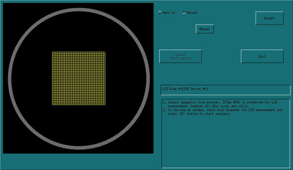
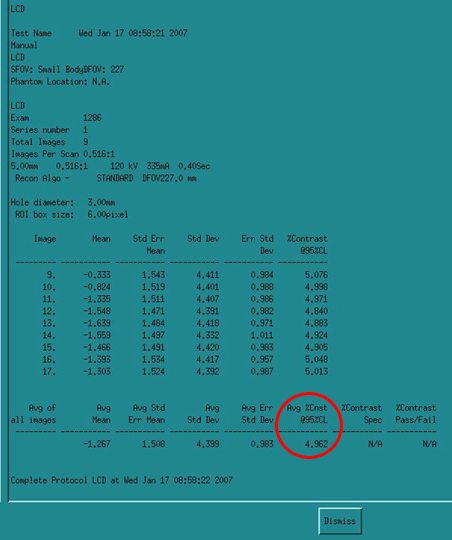

Operating Documentation
Direction 5193575-800, Rev# 5
LightSpeed 7.X Service Information - Adv
Operating Documentation |
| Last Revised: | 18 January 2007 |
Start [Image Analysis] from the Image Quality tab of the Common Service Desktop.
Move the Image Analysis window to the left-hand monitor for access to the Sort Window (Image List-Select Browser) on the right-hand monitor Service Desktop screen.
Using the Sort Window (Image List-Select Browser), highlight ONLY the water images from the first series (images 9-17).
From the Image Analysis window, select the Manual radio button at the top instead of Auto 1X and select [LCD] under the Manual Tools menu. Click [Accept] to begin the analysis. See example Image Analysis Tool, below.

A dialog box will open requesting, “Input hole diameter (mm)”. Enter 3 and click [OK] . A report will be displayed showing the results. See example LCD Report, below.

On the QA Data Form, record the “Avg %Cnst @ 95%CL” value from the LCD report. The expected contrast value for a 3mm object is less than 5.000 HU.
Avg %Cnst @95%CL < 5.000 HU
This is basically a noise measurement. Suspect operator error as the first failure mode. Incorrect protocol, DFOV, and phantom centering are the most likely causes.
Verify all protocol values are correct and the phantom is centered.
Rescan and then repeat the test to verify Image Performance.
Perform Detailed Calibrations if necessary.